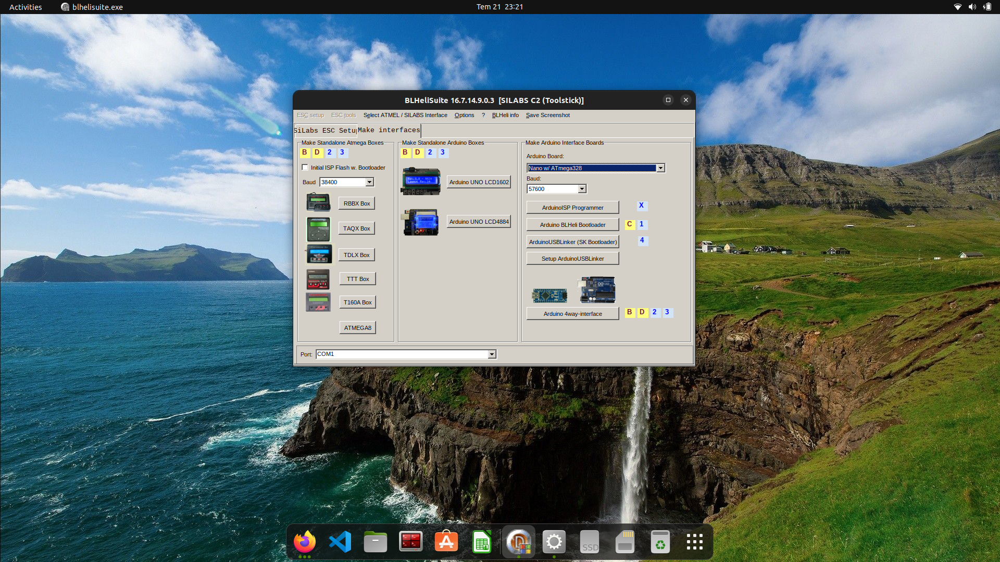
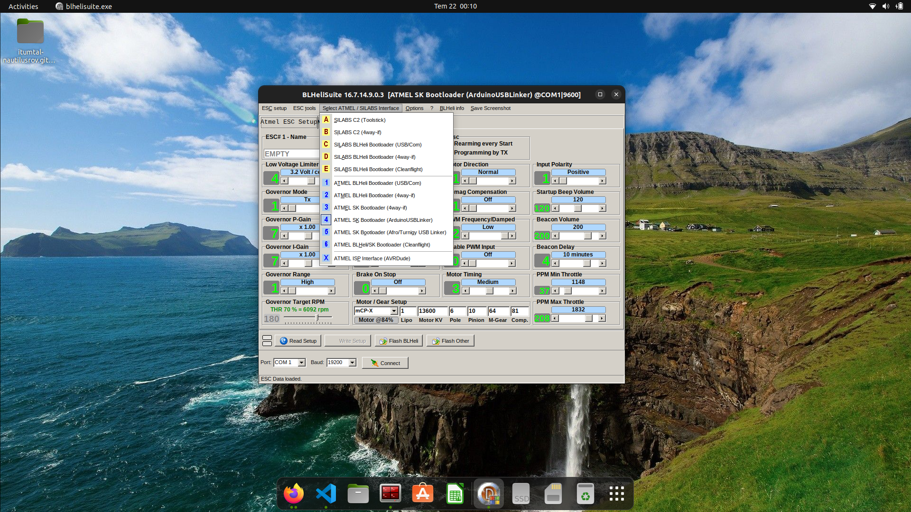

İnsansız su altı araçlarında (ROV) iticilerin hem ileri hem de geri yönde çalışabilmesi, manevra kabiliyeti ve hassas pozisyonlama için zorunludur. Ancak piyasada standart olarak satılan uygun fiyatlı drone ESC'leri fabrikadan tek yönlü olarak çıkar. Bu yazıda, Sarıca aracımızda kullandığımız bu ESC'lere Arduino Uno aracılığıyla nasıl çift yönlü (Bidirectional/3D) yazılım atabileceğinizi adım adım anlatıyoruz.
1. Hazırlık ve Linux Ortamında Wine Ayarları
Bu işlem için klasik BLHeliSuite yazılımını (.exe) kullanacağız. Eğer Linux (Ubuntu/Debian) ortamında çalışıyorsanız, yazılımı Wine üzerinden sorunsuz çalıştırabilirsiniz. Arduino'nun bağlı olduğu portu Wine'a bir COM portu olarak tanıtmak için terminalde şu komutları sırasıyla çalıştırmanız yeterlidir:
# Arduino portunu (genellikle ttyACM0) Wine'a com1 olarak bağla
cd ~/.wine/dosdevices
rm com1
ln -s /dev/ttyACM0 com1
# BLHeliSuite'i çalıştır
wine BLHeliSuite.exe2. Arduino'yu Programlayıcıya Dönüştürme
BLHeliSuite açıldığında, yazılımın alt kısmındaki Port menüsünden COM1'i seçin. Sağ üst taraftaki menüden Make Interfaces sekmesine tıklayın.

Sağ taraftaki Make Arduino Interface Boards bölümünden kartınızı (Arduino Uno) seçin ve ArduinoUSBLinker (SK Bootloader) butonuna tıklayarak gerekli köprü yazılımını Uno'nuza yükleyin. Artık Arduino'nuz bir 1-Wire arayüzü olarak çalışmaya hazır.
3. ESC ve Arduino Bağlantısı
ESC'yi flashlamak için servo (sinyal) kablosu üzerinden Arduino'ya bağlamamız gerekiyor. Bu işlemde 1-Wire (Tek Kablo) protokolünü kullanacağız.
- Siyah / Kahverengi Kablo (GND): Arduino'nun GND pinine.
- Sarı / Beyaz Kablo (Sinyal): Arduino'nun D11 pinine.
- Kırmızı Kablo (5V): BOŞTA (Eğer BEC varsa). Arduino'ya bağlamayın!
Güvenlik Uyarısı: Olası kazaları önlemek için işlem sırasında motorun pervanelerinden uzak durun. Ayrıca, veri iletişiminin başlayabilmesi için tüm kabloları bağladıktan sonra ESC'ye batarya üzerinden güç vererek cihazı aktifleştirmeniz gerekmektedir.
4. Ayarları Okuma ve Çift Yönlü Moda Geçiş
Bağlantılar tamamlandıktan sonra BLHeliSuite ana menüsüne dönün. Üst sekmedeki Select ATMEL / SILABS Interface menüsünden ATMEL SK Bootloader (Arduino USB Linker) seçeneğini işaretleyin.

Sırasıyla aşağıdaki adımları izleyin:
- Alt kısımdaki Connect butonuna tıklayın.
- Hemen yanındaki Read Setup butonuna basın. (Ekrana ESC'nin mevcut parametreleri dökülecektir).
- Parametre listesindeki Motor Direction (veya PWM Mode) ayarını Bidirectional olarak değiştirin.
- Son olarak Write Setup butonuna basarak ayarları kalıcı olarak ESC'ye yazdırın. İşlem başarıyla tamamlandığında ESC'den bir onay sesi duyacaksınız.
Sonuç: Yeni PWM Değerleri
Tebrikler! ESC'niz artık çift yönlü çalışıyor. Yazılım tarafında aracınızın motorlarını kontrol ederken PWM aralığınız şu şekilde değişmiş oldu:
- 1500us: Tamamen durma noktası
- 1500us - 2000us arası: İleri yönde hızlanma
- 1500us - 1000us arası: Geri yönde hızlanma